Benchmark Tooling between VINS-Mono and Open-VINS
This page is intended to compare the performance between VINS-Mono and OpenVINS(MSCKF) on custom data and open-source data. As for KPI definition, please ref Trajectory Evaluation Study - wave 3 development - Docupedia (bosch.com)
Benchmark on EuRoC MAV Dataset
Data set description: kmavvisualinertialdatasets – ASL Datasets (ethz.ch)
Evolution Tools: ov_eval namespace | OpenVINS
Tips:
This page will not compare the whole dataset. just provide the approach to generate the performance report.
VINS-Mono and Open-VINS have similar performance on " MH_05_difficult" data.
How to collect the estimated Pose for VINS-Mono
Execute the following command and wait for a while. And these commands are from different repo.
# Terminal 1roslaunch vins_estimator euroc.launch# Terminal 2roslaunch ov_eval record.launchROS Launch File for VINS-Mono,
<launch> <arg name="config_path" default = "$(find feature_tracker)/../config/euroc/euroc_config.yaml" /> <arg name="vins_path" default = "$(find feature_tracker)/../config/../" /> <node name="feature_tracker" pkg="feature_tracker" type="feature_tracker" output="log"> <param name="config_file" type="string" value="$(arg config_path)" /> <param name="vins_folder" type="string" value="$(arg vins_path)" /> node> <node name="vins_estimator" pkg="vins_estimator" type="vins_estimator" output="screen"> <param name="config_file" type="string" value="$(arg config_path)" /> <param name="vins_folder" type="string" value="$(arg vins_path)" /> node> <node name="pose_graph" pkg="pose_graph" type="pose_graph" output="screen"> <param name="config_file" type="string" value="$(arg config_path)" /> <param name="visualization_shift_x" type="int" value="0" /> <param name="visualization_shift_y" type="int" value="0" /> <param name="skip_cnt" type="int" value="0" /> <param name="skip_dis" type="double" value="0" /> node> <node name="rvizvisualisation" pkg="rviz" type="rviz" output="log" args="-d $(find vins_estimator)/../config/vins_rviz_config.rviz" />launch>ROS Launch File for OpenVINS "ov_eval" tooling,
<launch> <arg name="bag_name" default="MH_05_difficult" /> <arg name="bag_path" default="/home/maploc/workspace/EuRoC" /> <arg name="path_save" default="/home/maploc/workspace/output" /> <node name="recorder_estimate" pkg="ov_eval" type="pose_to_file" output="screen" required="true"> <param name="topic" type="str" value="/vins_estimator/odometry" /> <param name="topic_type" type="str" value="Odometry" /> <param name="output" type="str" value="$(arg path_save)/$(arg bag_name)_est.txt" /> node> <node name="recorder_timing" pkg="ov_eval" type="pid_ros.py" output="screen"> <param name="nodes" type="str" value="/feature_tracker,/vins_estimator,/pose_graph" /> <param name="output" type="str" value="$(arg path_save)/psutil_log.txt" /> node> <node pkg="rosbag" type="play" name="rosbag" args="-r 4 $(arg bag_path)/$(arg bag_name).bag" required="true"/>launch>we can also evaluate the computational load ( not computation time ) from the record,
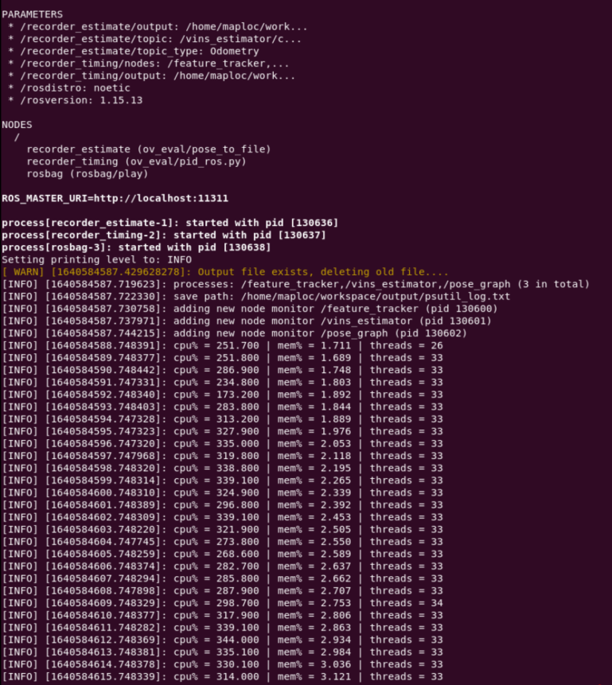
How to collect the estimated Pose for Open-VINS
Execute the following command and wait for a while.
roslaunch ov_msckf subscribe.launch config:=euroc_mavConfiguration for euroc_mav,
<launch> <arg name="verbosity" default="INFO" /> <arg name="config" default="euroc_mav" /> <arg name="config_path" default="$(find ov_msckf)/../config/$(arg config)/estimator_config.yaml" /> <arg name="bag_name" default="MH_05_difficult" /> <arg name="bag_path" default="/home/maploc/workspace/EuRoC" /> <arg name="max_cameras" default="1" /> <arg name="use_stereo" default="false" /> <arg name="bag_start" default="0" /> <arg name="dataset" default="MH_05_difficult" /> <arg name="dobag" default="false" /> <arg name="bag" default="$(arg bag_path)/$(arg bag_name).bag" /> <arg name="dosave" default="true" /> <arg name="dotime" default="true" /> <arg name="path_est" default="/home/maploc/workspace/output/traj_estimate.txt" /> <arg name="path_time" default="/home/maploc/workspace/output/traj_timing.txt" /> <arg name="dolivetraj" default="false" /> <arg name="path_gt" default="$(find ov_data)/$(arg config)/$(arg dataset).txt" /> <node name="run_subscribe_msckf" pkg="ov_msckf" type="run_subscribe_msckf" output="screen" clear_params="true" required="true"> <param name="verbosity" type="string" value="$(arg verbosity)" /> <param name="config_path" type="string" value="$(arg config_path)" /> <param name="use_stereo" type="bool" value="$(arg use_stereo)" /> <param name="max_cameras" type="int" value="$(arg max_cameras)" /> <param name="record_timing_information" type="bool" value="$(arg dotime)" /> <param name="record_timing_filepath" type="string" value="$(arg path_time)" /> node> <node pkg="rosbag" type="play" name="rosbag" args="-r 4 $(arg bag_path)/$(arg bag_name).bag" required="true"/> <group if="$(arg dosave)"> <node name="recorder_estimate" pkg="ov_eval" type="pose_to_file" output="screen" required="true"> <param name="topic" type="str" value="/ov_msckf/poseimu" /> <param name="topic_type" type="str" value="PoseWithCovarianceStamped" /> <param name="output" type="str" value="$(arg path_est)" /> node> group> <group if="$(arg dolivetraj)"> <node name="live_align_trajectory" pkg="ov_eval" type="live_align_trajectory" output="log" clear_params="true"> <param name="alignment_type" type="str" value="posyaw" /> <param name="path_gt" type="str" value="$(arg path_gt)" /> node> group>launch>%YAML:1.0 # need to specify the file type at the top!verbosity: "INFO" # ALL, DEBUG, INFO, WARNING, ERROR, SILENTuse_fej: true # if first-estimate Jacobians should be used (enable for good consistency)use_imuavg: true # if using discrete integration, if we should average sequential IMU measurements to "smooth" ituse_rk4int: true # if rk4 integration should be used (overrides imu averaging)use_stereo: false # if we have more than 1 camera, if we should try to track stereo constraints between pairsmax_cameras: 1 # how many cameras we have 1 = mono, 2 = stereo, >2 = binocular (all mono tracking)calib_cam_extrinsics: true # if the transform between camera and IMU should be optimized R_ItoC, p_CinIcalib_cam_intrinsics: true # if camera intrinsics should be optimized (focal, center, distortion)calib_cam_timeoffset: true # if timeoffset between camera and IMU should be optimizedmax_clones: 11 # how many clones in the sliding windowmax_slam: 50 # number of features in our state vectormax_slam_in_update: 25 # update can be split into sequential updates of batches, how many in a batchmax_msckf_in_update: 40 # how many MSCKF features to use in the updatedt_slam_delay: 2 # delay before initializing (helps with stability from bad initialization...)gravity_mag: 9.81 # magnitude of gravity in this locationfeat_rep_msckf: "GLOBAL_3D"feat_rep_slam: "ANCHORED_MSCKF_INVERSE_DEPTH"feat_rep_aruco: "ANCHORED_MSCKF_INVERSE_DEPTH"# zero velocity update parameters we can use# we support either IMU-based or disparity detection.try_zupt: truezupt_chi2_multipler: 0 # set to 0 for only disp-basedzupt_max_velocity: 0.1zupt_noise_multiplier: 50zupt_max_disparity: 1.5 # set to 0 for only imu-basedzupt_only_at_beginning: true# ==================================================================# ==================================================================init_window_time: 0.75 # how many seconds to collect initialization informationinit_imu_thresh: 1.5 # threshold for variance of the accelerometer to detect a "jerk" in motioninit_max_disparity: 1.5 # max disparity to consider the platform stationary (dependent on resolution)init_max_features: 50 # how many features to track during initialization (saves on computation)# ==================================================================# ==================================================================record_timing_information: true # if we want to record timing information of the methodrecord_timing_filepath: "/home/maploc/workspace/output/traj_timing.txt" # https://docs.openvins.com/eval-timing.html#eval-ov-timing-flame# if we want to save the simulation state and its diagional covariance# use this with rosrun ov_eval error_simulationsave_total_state: truefilepath_est: "/home/maploc/workspace/output/ov_estimate.txt"filepath_std: "/home/maploc/workspace/output/ov_estimate_std.txt"filepath_gt: "/home/maploc/workspace/output/ov_groundtruth.txt"# ==================================================================# ==================================================================# our front-end feature tracking parameters# we have a KLT and descriptor based (KLT is better implemented...)use_klt: truenum_pts: 250fast_threshold: 15grid_x: 20grid_y: 20min_px_dist: 15knn_ratio: 0.70downsample_cameras: false # will downsample image in half if truemulti_threading: true # if should enable opencv multi threadinghistogram_method: "HISTOGRAM" # NONE, HISTOGRAM, CLAHE# aruco tag tracker for the system# DICT_6X6_1000 from https://chev.me/arucogen/use_aruco: falsenum_aruco: 1024downsize_aruco: true# ==================================================================# ==================================================================# camera noises and chi-squared threshold multipliersup_msckf_sigma_px: 1up_msckf_chi2_multipler: 1up_slam_sigma_px: 1up_slam_chi2_multipler: 1up_aruco_sigma_px: 1up_aruco_chi2_multipler: 1# masks for our imagesuse_mask: false# imu and camera spacial-temporal# imu config should also have the correct noise valuesrelative_config_imu: "kalibr_imu_chain.yaml"relative_config_imucam: "kalibr_imucam_chain.yaml"Ground Truth Format Conversion
We now need to ensure both our estimated trajectory and groundtruth are in the correct formats for us to read in. We need things to be in the RPE text file format (i.e. time(s), px, py, pz, qx, qy, qz, qw). We have a nice helper script that will transform ASL / EuRoC groundtruth files to the correct format. By default the EuRoC groundtruth has the timestamp in nanoseconds and the quaternion is in an incorrect order (i.e. time(ns), px, py, pz, qw, qx, qy, qz). A user can either process all CSV files in a given folder, or just a specific one.
The EuRoC groundtruth file is hold in ASL Dataset Format.
rosrun ov_eval format_converter /home/maploc/workspace/output/MH_05_difficult.csvCheck Aligned Trajectory
Since the scale and roll+pitch are observable, there are only 4 DoF for trajectory alignment. Hence we can choose the " posyaw " for alignment.
rosrun ov_eval plot_trajectories posyaw ../output/MH_05_difficult.txt ../output/MH_05_difficult_est.txtNot aligned Trajectory,
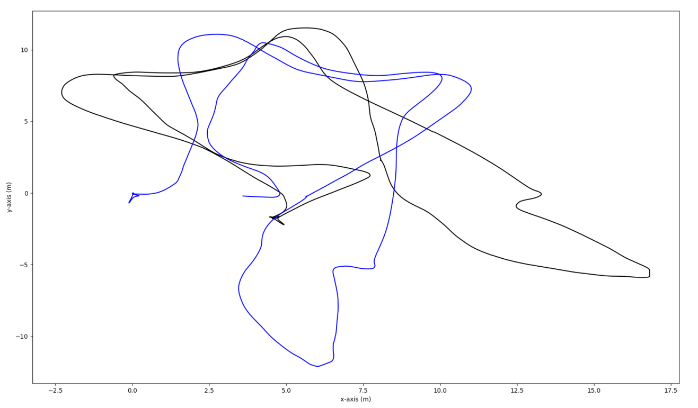
4-DoF aligned Trajectory,
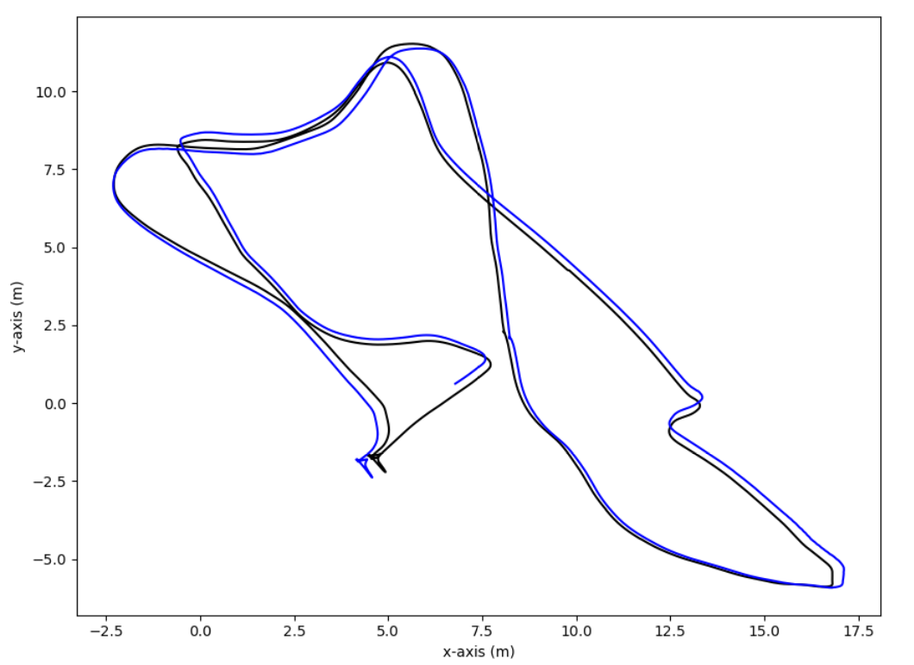
Generate Performance Report for VINS-Mono
The single run script will plot statistics and also 3σ bounds if available. One can use this to see consistency of the estimator or debug how the current run has gone. It also reports to console the average RMSE and RPE values for this run along with the number of samples. To change the RPE distances you will need to edit the code currently.
rosrun ov_eval error_singlerun posyaw ../output/MH_05_difficult.txt ../output/MH_05_difficult_est.txtThe performance for VINS-Mono on MH_05_difficult dataset are as followed (tips: "/vins_estimator/odometry" will be the online localization result from VINS-Mono)
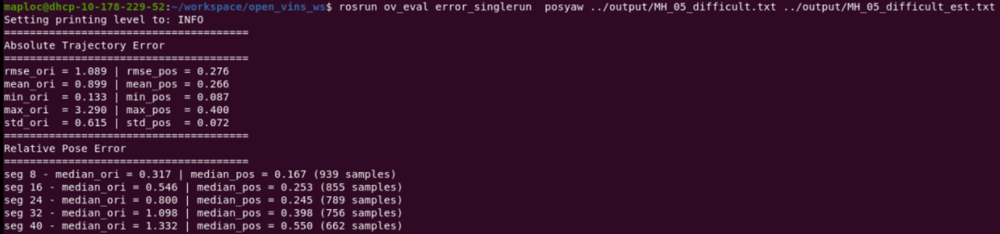
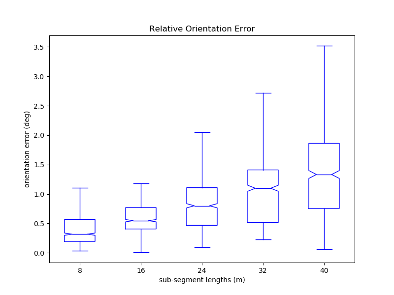 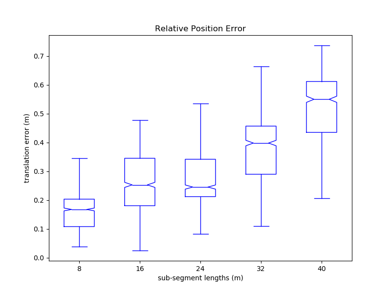
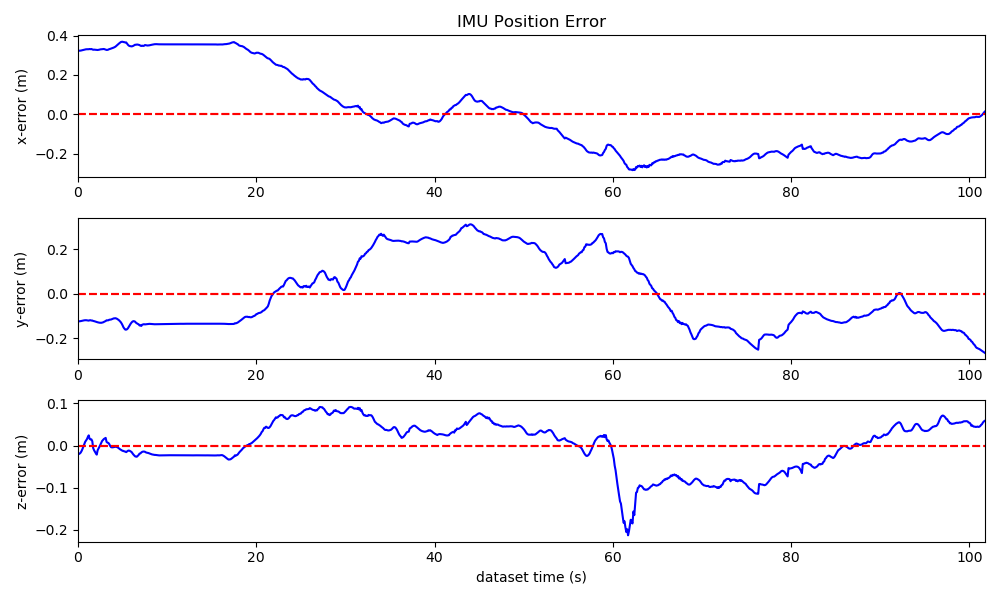 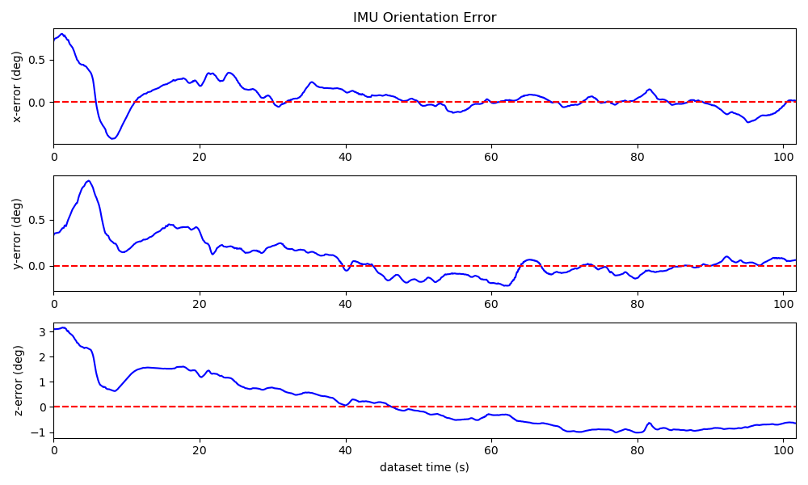
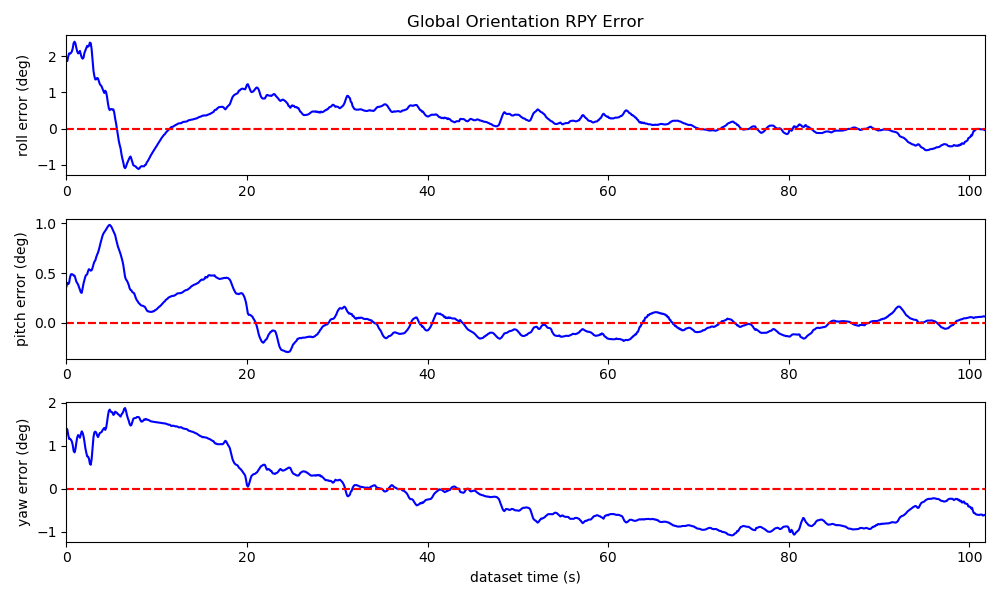
Generate Performance Report for Open-VINS
rosrun ov_eval error_singlerun posyaw ../output/MH_05_difficult.txt ../output/traj_estimate.txtrosrun ov_eval timing_flamegraph ../output/traj_timing.txt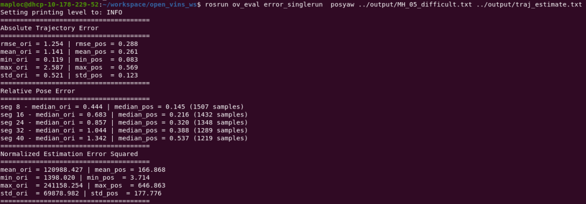
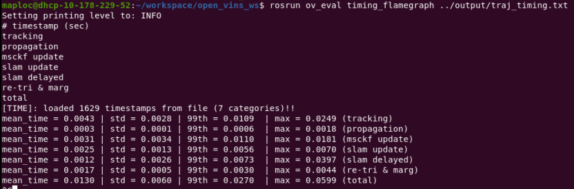
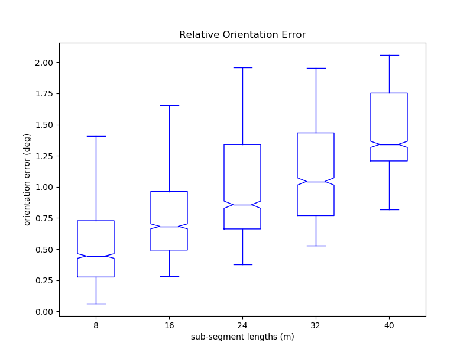 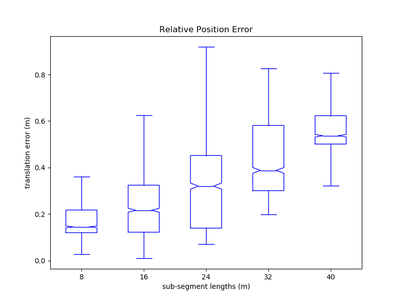
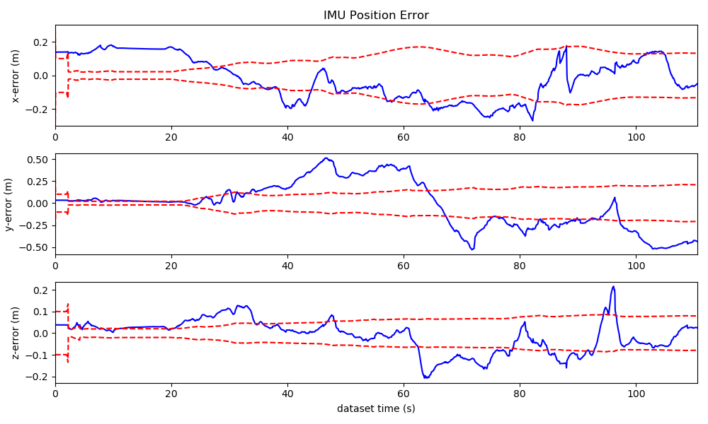 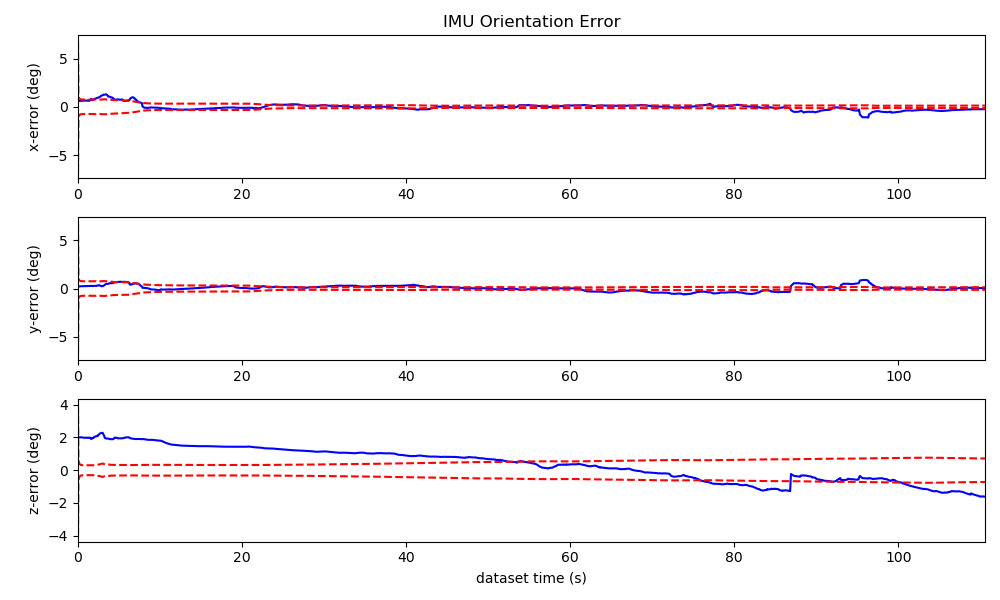
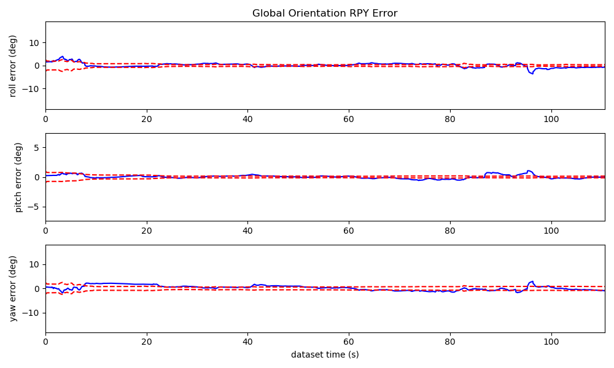 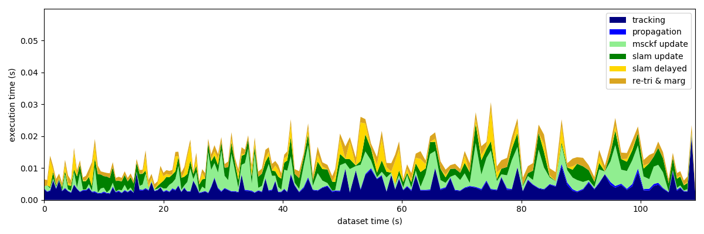
Deployment Tips
OpenVINS
please follow the instruction on page Getting Started » Installation Guide | OpenVINS.
In order to benchmark with VINS-Mono fairly, we should change the config to 1 camera and don't use stereo image.
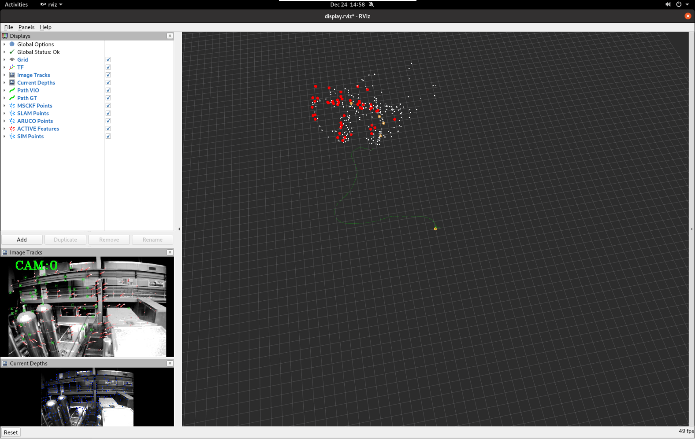
VINS-Mono
if you want to install it on OSD6 (ubuntu20.04), please try this version of VINS-Mono, huahang/VINS-Mono at fix-build-for-ros-noetic (github.com)
otherwise you'll suffer from the opencv version confliction between ROS and VINS-Mono.
The screenshot comes from MH_05_difficult.bag of EuRoC dataset.
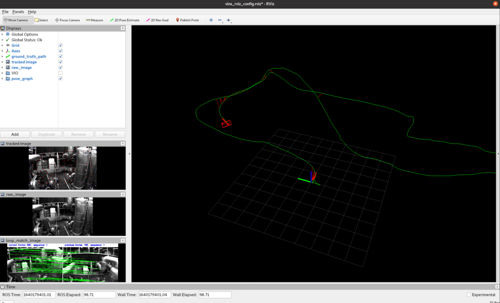